En este proyecto,tras la instalación de Mongodb en Debian, trataremos de Mongodb en el que tenemos los siguientes requisitos
PROYECTO MONGO - BBDD
En este proyecto,tras la instalación de Mongodb en Debian, trataremos de Mongodb en el que tenemos los siguientes requisitos:
1. Parte
- Debes seleccionar un fichero json que incluya todos los tipos de datos soportados en MongoDB. Antes de continuar la profesora deberá dar el visto bueno al mismo.
- Con la utilidad mongoimport introduce los documentos correspondientes a esa colección.
- Inserta varios documentos utilizando los dos métodos de inserción de MongoDB
- Elimina varios documentos utilizando los dos métodos de eliminación de MongoDB
- Actualiza varios documentos utilizando los tres métodos de eliminación de MongoDB Consultas:
- Al menos incluye 5 consultas de datos simple
- Al menos 3 consultas con array
- Al menos 3 consultas con documentos embebidos
- Al menos 1 consulta de agrupación
2. Parte
- Debes seleccionar al menos cuatro tablas de tu proyecto que incluyan una relación N:M y una 1:N con el mayor número de tipos de datos soportados en MongoDB. Antes de continuar la profesora deberá dar el visto bueno a las mismas.
- Debes pasar de SQL a MongoDB.
- Inserta varios documentos utilizando los dos métodos de inserción de MongoDB
- Elimina varios documentos utilizando los dos métodos de eliminación de MongoDB
- Actualiza varios documentos utilizando los tres métodos de eliminación de MongoDB Consultas:
- Al menos incluye 5 consultas de datos simples
- Al menos 3 consultas con arrays
- Al menos 3 consultas con documentos embebidos
- Al menos 1 consulta de agrupación
NOTA: Debes utilizar en las consultas proyecciones, operadores, ordenación y los modificadores sort y limit. Se valorará la complejidad de las mismas. Debes incluir capturas que demuestren el buen funcionamiento de cada una de las operaciones realizadas en cada una de las dos partes.
Con esto dividiremos el trabajo en 2 partes:
- Parte
- Parte
Y comenzamos la práctica.
1. PARTE
Para este apartado y el siguiente seguiré el orden de las preguntas y los seguiré de esa manera.
1. Debes seleccionar un fichero json que incluya todos los tipos de datos soportados en MongoDB. Antes de continuar la profesora deberá dar el visto bueno al mismo.
El fichero json elegido es el siguiente: https://data.nasa.gov/resource/y77d-th95.json
Aún así este fichero tiene modificaciones, entre ellas el recorte ya que son muchas librerías para hacer consultas algo más exactas.
2. Con la utilidad mongoimport introduce los documentos correspondientes a esa colección.
Para ello, como yo tengo una máquina en el cloud para este proyecto, deberé importar una copia a dicha máquina que he configurado para entrar por ssh. Esto lo haré mediante el siguiente comando:
scp ~/BBDD/ficheromongo.json nombreservidormongo@ipdelservidor:
En mi caso se verá así:
scp ~/BBDD/ficheromongo.json debian@172.22.200.121:
Y para importar dicho fichero .json, lo haremos con el siguiente comando:
mongoimport --db <nombre de la base de datos> --collection <nombre de la colección> --file <ruta del archivo JSON>
En mi caso se verá así:
mongoimport --db proyectobbdd --collection mi_coleccion --jsonArray --file ficheromongo.json
Con esto, ya habremos importado nuestro fichero json a mongo.
3. Inserta varios documentos utilizando los dos métodos de inserción de MongoDB.
Para este subapartado, debemos saber que hay 2 tipos de métodos de inserción de datos en Mongodb que son:
insertOne() : este método inserta un solo documento a nuestra colección. insertMany() : este método inserta dos o más documentos a nuestra colección.
Tras esto, os voy a mostrar los ejemplos utilizados para cada uno de los métodos: En el primer caso, insertó un solo documento con los siguientes valores.
db.mi_coleccion.insertOne({"name":"Mi dios Javing","id":"2","nametype":"Valid","recclass":"L6","mass":"1001","fall":"Fell","year":"2004-06-07T00:00:00.000","reclat":"-3.75","reclong":"221.43233","geolocation":{"type":"Point","coordinates":[221.43233,-3.75]}})
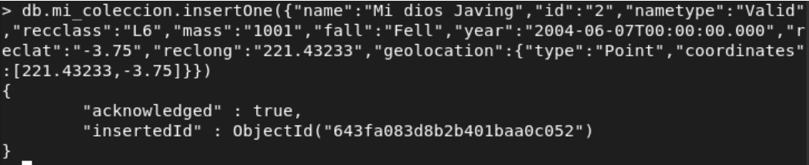
Con esta inserción, vemos el correcto funcionamiento de este complemento .insertOne(). Pasamos al complemento .insertMany() en el cual inserto 3 documentos con valores distintos entre sí.
db.mi_coleccion.insertMany([
{"name":"Kenia","id":"3","nametype":"Valid","recclass":"H5","mass":"1231","fall":"Fell","year":"2001-01-30T00:00:00.000","reclat":"-22.35","reclong":"563.23413","geolocation":{"type":"Point","coordinates":[563.23413,-22.35]}},
{"name":"Congo","id":"4","nametype":"Valid","recclass":"L5","mass":"900","fall":"Fell","year":"1992-03-12T00:00:00.000","reclat":"-31.45","reclong":"851.65840","geolocation":{"type":"Point","coordinates":[851.65840,-31.45]}},
{"name":"Nueva Ginea","id":"5","nametype":"Valid","recclass":"L3-4","mass":"400","fall":"Fell","year":"1925-12-01T00:00:00.000","reclat":"-1.20","reclong":"130.23413","geolocation":{"type":"Point","coordinates":[130.23413,-1.20]}} ])
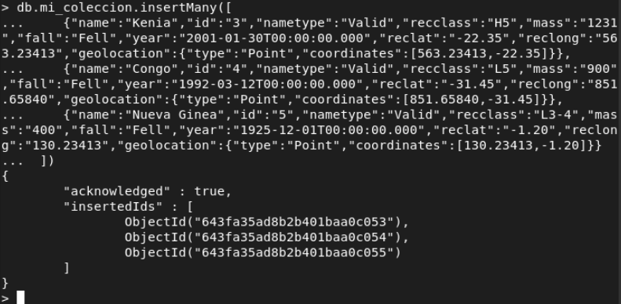
Con esto ya hemos acabado con los 2 métodos de inserción.
4. Elimina varios documentos utilizando los dos métodos de eliminación de MongoDB
En MongoDB, existen dos métodos principales para eliminar documentos de una colección:
deleteOne() deleteMany()
A continuación, te mostraré cómo utilizar ambos métodos para eliminar documentos de una colección. Primero, comentamos el borrado de datos simple con esta consulta para eliminar la primera que insertamos:
db.mi_coleccion.deleteOne({ "name": "Mi dios Javing" })
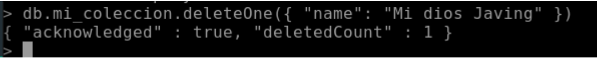
Con esto, hemos borrado un dato que agregamos anteriormente con el nombre “Mi dios Javing” en mongodb. Tras esto, vamos hacer una consulta para que nos deje borrar más de un tipo de dato. Esto lo haremos con el método de deleteMany() que se verá de esta forma:
db.mi_coleccion.deleteMany({ "id": { $lte: "5" } })
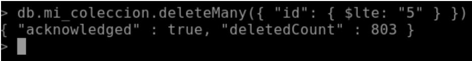
Con esto, hemos borrado todos los documentos de la colección mi_coleccion de la base de datos proyectobbdd que tengan un campo id con un valor menor o igual a 5.
Tras esto, pasamos al siguiente apartado.
5. Actualiza varios documentos utilizando los tres métodos de eliminación de MongoDB.
En este apartado, para actualizar varios documentos utilizando los tres métodos de eliminación de MongoDB, primero necesitas tener varios documentos que cumplan con la modificación que quieres hacer. A continuación, se proporciona un ejemplo de cómo actualizar varios documentos utilizando los tres métodos de eliminación con este formato de JSON: Método updateOne(): actualiza el primer documento que cumpla con la condición especificada. Se verá mejor con este ejemplo:
db.mi_coleccion.updateOne({ "name": "Aleppo" }, { $set: { "mass": "2000" } })
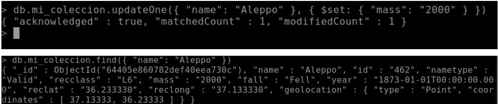
Con esta consulta de actualización, lo que hemos hecho ha sido actualizar la masa a 2000 del meteorito que se llama Aleppo y vemos que se ha actualizado correctamente. Método updateMany(): actualiza todos los documentos que cumplan con la condición especificada. Se verá mejor con el siguiente ejemplo:
db.mi_coleccion.updateMany({ "year": "1923-01-01T00:00:00.000" }, { $set: { "recclass": "L5" } })
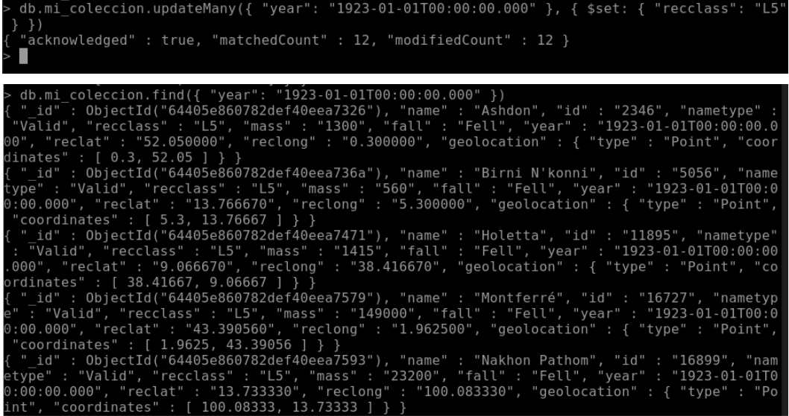 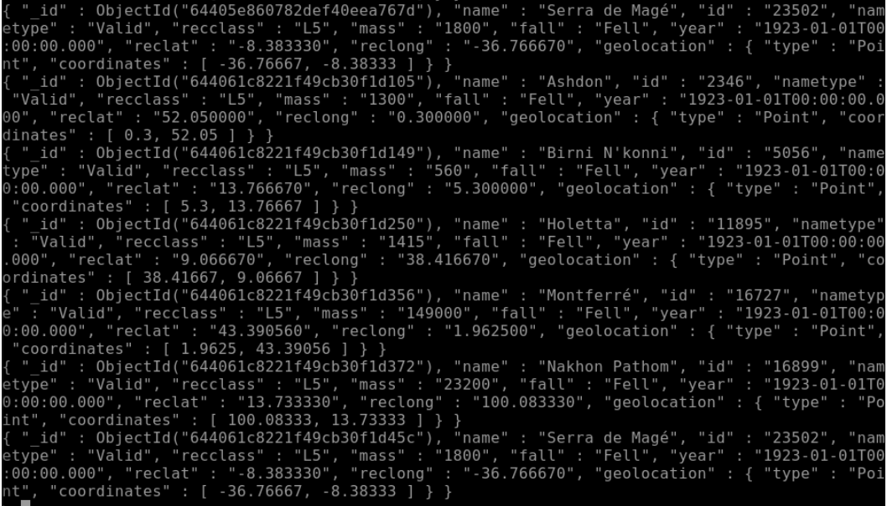
Con esta consulta de actualización, lo que hemos actualizado es que los meteoritos caídos en 1923, sean de la clase L5 y vemos que se ha actualizado correctamente a 12 meteoritos mediantes esta consulta. Método replaceOne(): reemplaza el primer documento que cumpla con la condición especificada. Se verá mejor con el siguiente ejemplo:
db.mi_coleccion.replaceOne({ "id": "5039" }, { "name": "Ballena", "mass": "2400" })
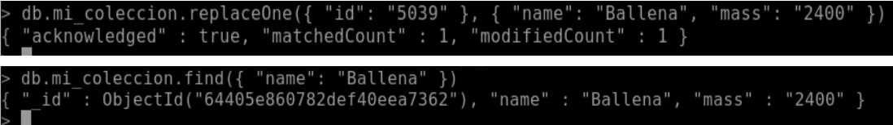
Con esta consulta de actualización, lo que hemos remplazado ese id con las siguientes condiciones: Nombre ballena Y masa 2400 KG. Y vemos que se han creado correctamente con las capturas siguientes de db.mi_coleccion.find() para filtrar el dato correctamente en cada uno de los métodos. Mediante estos 3 tipos de actualización de datos, podemos manipular el código json a nuestro antojo y se ve reflejado en estos métodos de actualización. Y pasamos al último apartado de la parte 1.
6. Consultas:
6.1.- Al menos incluye 5 consultas de datos simples
6.2.- Al menos 3 consultas con arrays
6.3.- Al menos 3 consultas con documentos embebidos
6.4.- Al menos 1 consulta de agrupación
Para este apartado, lo dividiremos en partes para poder dividirlo de la mejor manera sin agrupar distintos tipos de consultas. Y con esto comenzamos las consultas.
6.1.- Al menos incluye 5 consultas de datos simples
En este apartado haré las 5 correspondientes que son las siguientes:
- Obtener el nombre de la caída de meteorito.
db.mi_coleccion.find({id: "30443"}, {name: 1, _id: 0})
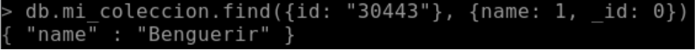
- Obtener una lista de ordenada por el id según el año 1923 .
db.mi_coleccion.find({ "year": "1923-01-01T00:00:00.000" }).sort({id: 1, year: -1})
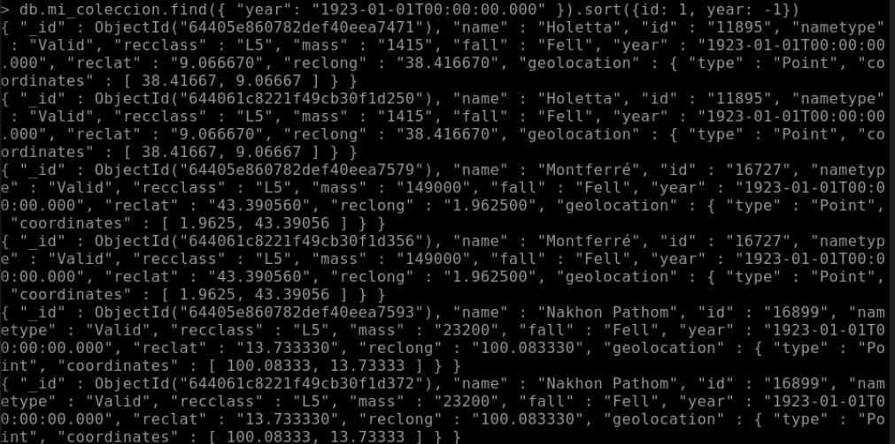
En este caso, nos mostrará las 12 que ya modificamos anteriormente.
- Muestra un meteorito que este entre el año 1990 (inclyendolo) hasta el año 2000, ordenado por masa descendentemente y con un límite de 5 datos mostrados.
db.mi_coleccion.find({year: {$gte: "1990-01-01T00:00:00.000", $lt: "2000-01-01T00:00:00.000"}}).sort({mass: -1}).limit(5)
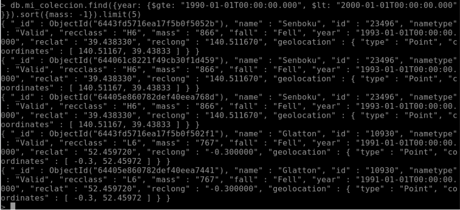
- Encuentra los meteoritos que tengan las reclass H5 con masa igual a 90000.
db.mi_coleccion.find({ "recclass": "H5" },{“mass”: {$eq : “90000”}})
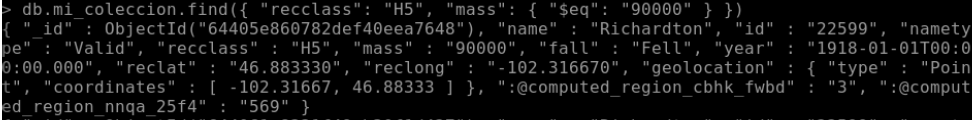
- Mostrar los meteoritos con reclass distinta a H5, con año mayor del 2000 ordenado por id descendentemente con límite de 8 meteoritos.
db.mi_coleccion.find({ "recclass": { $ne: "H5" }, "year": { $gt: "2000-01-01T00:00:00.000" } }).sort({ "id": -1 }).limit(8)
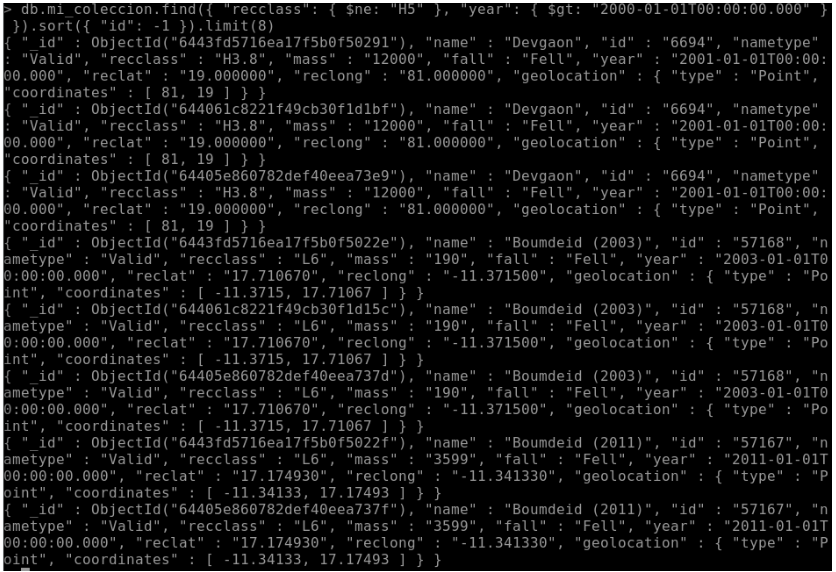
6.2.- Al menos 3 consultas con arrays
Para estas consultas, como mis datos no dan juego a los arrays, he tenido que añadir varios por mi cuenta. Exactamente 8 que están en el archivo sql.
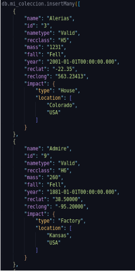 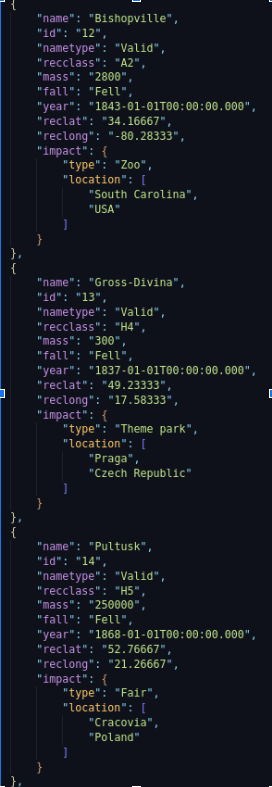 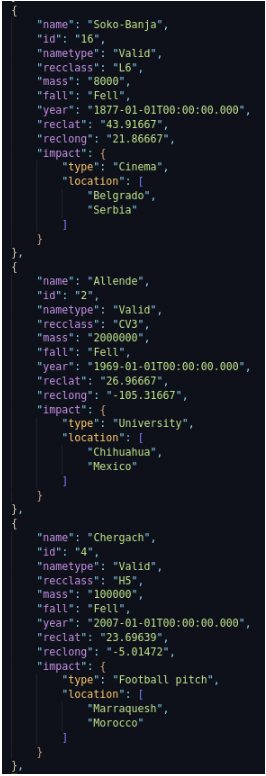 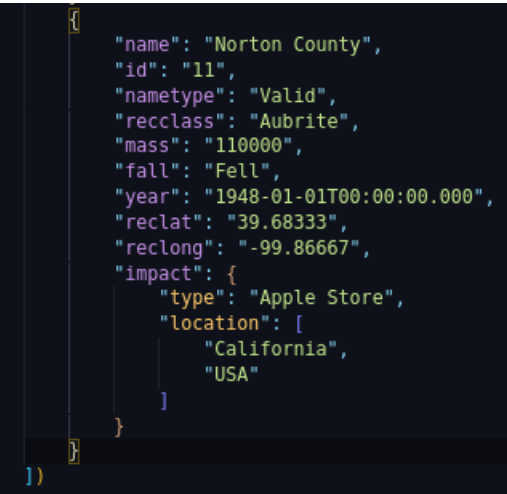
Con esto comenzamos las consultas de array.
- Mostrar todas las ubicaciones en las que ha impactado un meteorito:
db.mi_coleccion.distinct("impact.location")
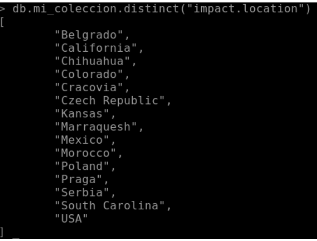
- Conseguir todos los impactos en los que el tipo de impacto fue “Factory”:
db.mi_coleccion.find({"impact.type": "Factory"})
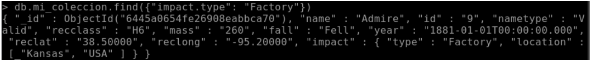
- Obtener los nombres de todos los meteoritos que han impactado en los Estados Unidos en orden alfabético:
db.mi_coleccion.find({"impact.location": "USA"}, {name: 1})
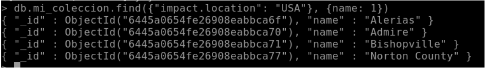
6.3.- Al menos 3 consultas con documentos embebidos
Para esto aplicaremos los inserts anteriores que utilizamos para los arrays.
- Mostrar todos los impactos de tipo “House”:
db.mi_coleccion.find({"impact.type": "House"})
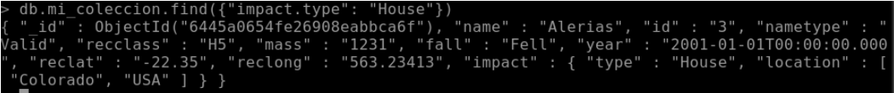
- Obtener todos los meteoritos que cayeron en los Estados Unidos:
db.mi_coleccion.find({"impact.location": {"$in": ["USA"]}})
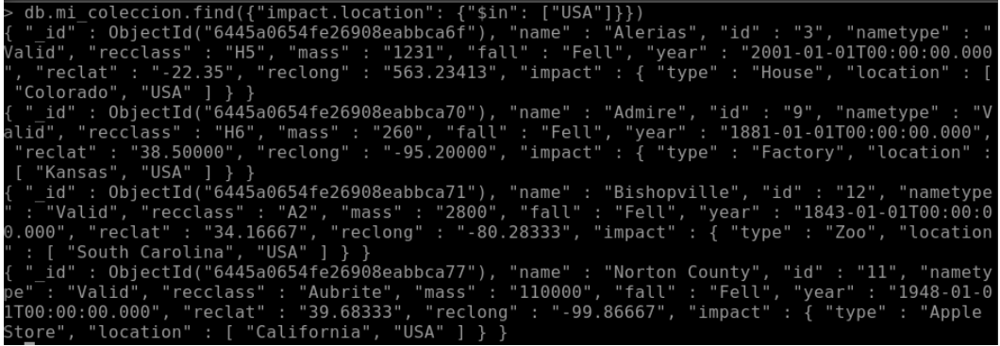
- Obtener el impacto y la ubicación del meteorito llamado “Chergach”:
db.mi_coleccion.find({"name": "Chergach"}, {"impact": 1})
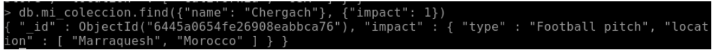
6.4.- Al menos 1 consulta de agrupación
Para esta consulta, aplicaremos los inserts que creamos anteriormente. La consulta que haremos será la siguiente:
- Mostrar los datos de los países, utilizando la ubicación del impacto del pais y contando los meteoritos de cada ubicación
db.meteorites.aggregate([{ $group : { _id : "$impact.location.1", count: { $sum: 1 } } }])
{ "_id" : "Morocco", "count" : 1 }
{ "_id" : "Mexico", "count" : 1 }
{ "_id" : "Serbia", "count" : 1 }
{ "_id" : "Czech Republic", "count" : 1 }
{ "_id" : "USA", "count" : 3 }
{ "_id" : "Poland", "count" : 1 }
2. PARTE
Para este apartado, aplicaré las tablas de mi proyecto de base de datos de la fase 3. En el enunciado, nos pide que haya una relación 1:N y otra relación N:M. En mi caso, son relaciones que no comparten relación entre 2 a 2 tablas, por ello, utilizaré 2 colecciones distintas. Las tablas involucradas son las siguientes: AVIÓN Y MANTENIMIENTO : N:M -> coleccion1 VUELO Y VIAJE: 1:N -> coleccion2
Para este apartado y el siguiente seguiré el orden de las preguntas y los seguiré de esa manera.
1. Debes seleccionar al menos cuatro tablas de tu proyecto que incluyan una relación N:M y una 1:N con el mayor número de tipos de datos soportados en MongoDB. Antes de continuar la profesora deberá dar el visto bueno a las mismas.
Ya me dió visto bueno a la selección de tablas del proyecto
2. Debes pasar de SQL a MongoDB.
Ya lo he pasado y os voy a mostrar ejemplos del formato que sigue mi json. Se ve de esta manera:
AVIÓN Y MANTENIMIENTO:
{
"Num_serie": 123456789,
"Antiguedad": "12-09-2015",
"Fecha_ultima_revision": "01-02-2022",
"Num_horas_vuelo": 345,
"Modelo_compania": "Boeing",
"Caracteristicas": [
{
"Num_motores": 1,
"Num_asientos": 180,
"Potencia_motores": 46.32,
"Dimensiones": 30.50,
"Autonomia": 8000
}
],
"mantenimiento": [
{
"cod_mantenimiento": "MNT-001",
"Descripcion": "Revisión de motores",
"Nombre_tecnico": "Jose Manuel Fernández"
}
]
}
VUELO Y VIAJE:
{
"vuelo": [
{
"cod_vuelo": "VU-001",
"cod_empleado": "EMP-001",
"cod_aeropuerto": "AER-001",
"Nombre": "Vuelo Madrid Barcelona",
"Cod_aeropuerto_origen": "MAD",
"Cod_aeropuerto_destino": "BCN",
"Compania": "Iberia",
"Hora_prevista_salida": "2023-05-01T12:30:00Z",
"Hora_prevista_llegada": "2023-05-01T14:00:00Z"
}
],
"viaje": [
{
"cod_viaje": "V-001",
"cod_vuelo": "VU-001",
"Fecha_viaje": "2023-05-01",
"Cancelado": "N"
}
]
}
3. Inserta varios documentos utilizando los dos métodos de inserción de MongoDB
Para este subapartado, debemos saber que hay 2 tipos de métodos de inserción de datos en Mongodb que son:
insertOne() : este método inserta un solo documento a nuestra colección. insertMany() : este método inserta dos o más documentos a nuestra colección.
Tras esto, os voy a mostrar los ejemplos utilizados para cada uno de los métodos: En el primer caso, insertó un solo documento con los siguientes valores.
db.coleccion1.insertOne({"Num_serie": 123456789,"Antiguedad": "12-09-2015", "Fecha_ultima_revision": "01-02-2022","Num_horas_vuelo": 345,"Modelo_compania": "Boeing","Caracteristicas": [ {"Num_motores": 1,"Num_asientos": 180, "Potencia_motores": 46.32, "Dimensiones": 30.50,"Autonomia": 8000 }],"mantenimiento": [{"cod_mantenimiento": "MNT-001","Descripcion": "Revisión de motores", "Nombre_tecnico": "Jose Manuel Fernández"}]})
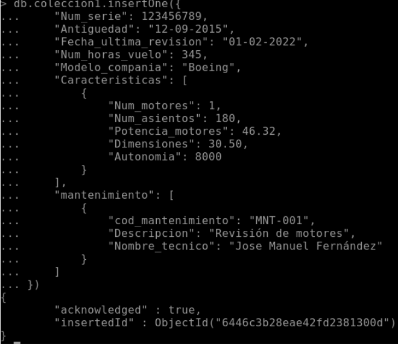
Con esta inserción, vemos el correcto funcionamiento de este complemento .insertOne(). Pasamos al complemento .insertMany() en el cual inserto 2 los documentos de las tablas vuelo y viajes de ambas colecciones que faltan.
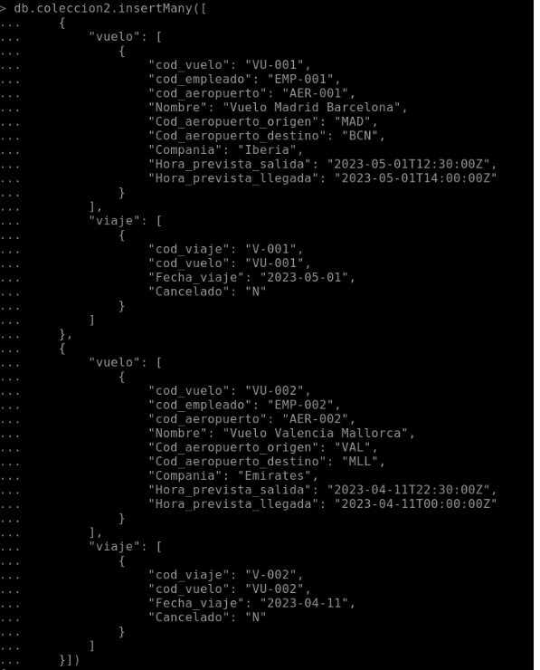 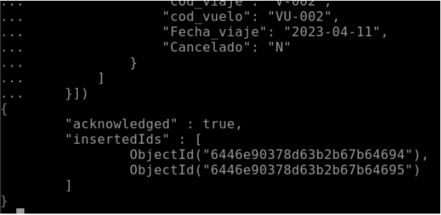
Con esto hemos mostrado los ejemplos de inserción. Los demás datos que no mostramos cómo los de avion-mantenimienrto y vuelos-viajes lo haremos con el insertMany().
4. Elimina varios documentos utilizando los dos métodos de eliminación de MongoDB
En MongoDB, existen dos métodos principales para eliminar documentos de una colección:
deleteOne() deleteMany()
A continuación, te mostraré cómo utilizar ambos métodos para eliminar documentos de una colección. Primero, comentamos el borrado de datos simple con esta consulta para eliminar la primera que insertamos:
db.coleccion2.deleteOne({
"vuelo.cod_vuelo": "VU-010"
})
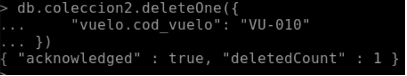
Con esto, hemos borrado un dato que agregamos anteriormente con el cod_vuelo “VU-010” en mongodb. Tras esto, vamos hacer una consulta para que nos deje borrar más de un tipo de dato. Esto lo haremos con el método de deleteMany() que se verá de esta forma:
db.coleccion2.deleteMany({ "viaje.Cancelado": "Y" })
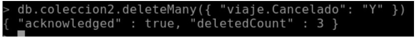
Con este borrado, hemos eliminado los vuelos que hayan sido cancelados. Con esto ya hemos visto todos los ejemplos de eliminacion.
5. Actualiza varios documentos utilizando los tres métodos de eliminación de MongoDB
En este apartado, para actualizar varios documentos utilizando los tres métodos de eliminación de MongoDB, primero necesitas tener varios documentos que cumplan con la modificación que quieres hacer. A continuación, se proporciona un ejemplo de cómo actualizar varios documentos utilizando los tres métodos de eliminación con este formato de JSON: Método updateOne(): actualiza el primer documento que cumpla con la condición especificada. Se verá mejor con este ejemplo:
db.coleccion2.updateOne(
{ "vuelo.cod_vuelo": "VU-005" },
{ $set: { "vuelo.$.Cod_aeropuerto_origen": "MAD" } })
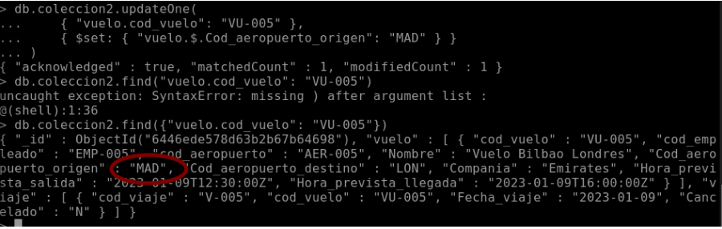
Esta actualización hace que el vuelo con cod_vuelo VU-005, cambie el aeropuerto de origen al de MAD. Método updateMany(): actualiza todos los documentos que cumplan con la condición especificada. Se verá mejor con el siguiente ejemplo:
db.coleccion2.updateMany(
{ "viaje.Cancelado": "N" },
{ $set: { "viaje.$.Cancelado": "Y" } }
)
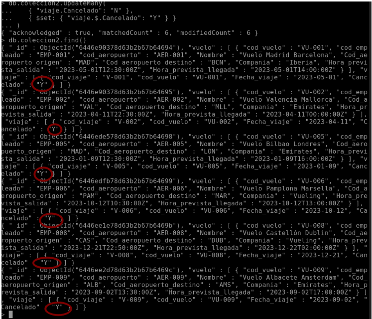
Con esta actualización, hemos conseguido cambiar el campo Cancelado de N a Y en varios documentos a la vez. Método replaceOne(): reemplaza el primer documento que cumpla con la condición especificada. Se verá mejor con el siguiente ejemplo: (La consulta en la captura) 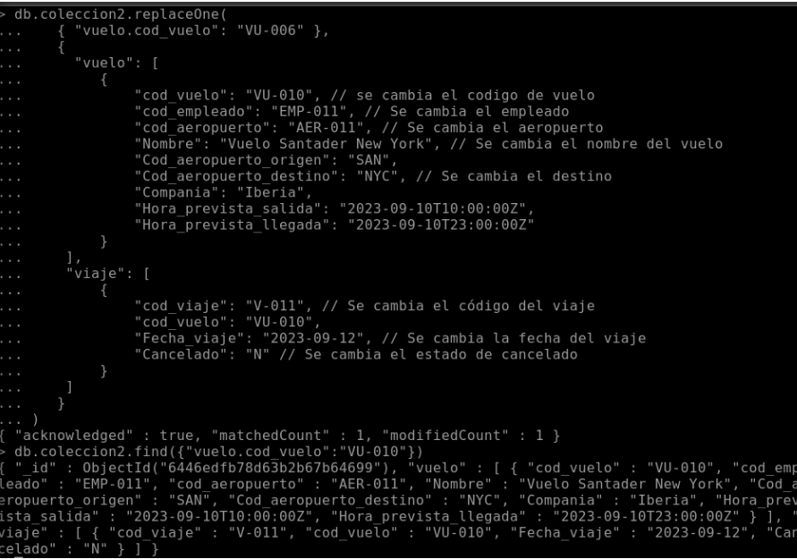
Vienen explicados los cambios en la captura. Modificamos el cod_vuelo VU-006 a VU-010 y más datos correctamente. Tras esto, ya hemos el apartado de modificado y actualización en Mongo DB.
6. Consultas:
6.1.- Al menos incluye 5 consultas de datos simples
6.2.- Al menos 3 consultas con arrays
6.3.- Al menos 3 consultas con documentos embebidos
6.4.- Al menos 1 consulta de agrupación
Para este apartado, lo dividiremos en partes para poder dividirlo de la mejor manera sin agrupar distintos tipos de consultas. Y con esto comenzamos las consultas.
6.1.- Al menos incluye 5 consultas de datos simples
- Obtener todos los vuelos con código de aeropuerto origen “SAN”:
db.collection2.find({"vuelo.Cod_aeropuerto_origen": "SAN"})
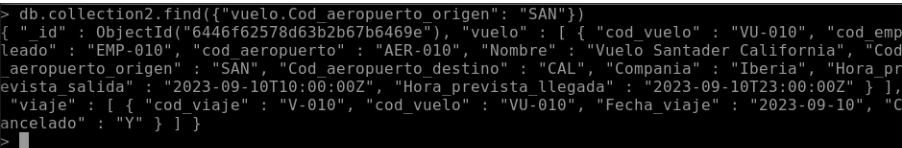
- Obtener todos los viajes cancelados:
db.collection2.find({"viaje.Cancelado": "Y"})
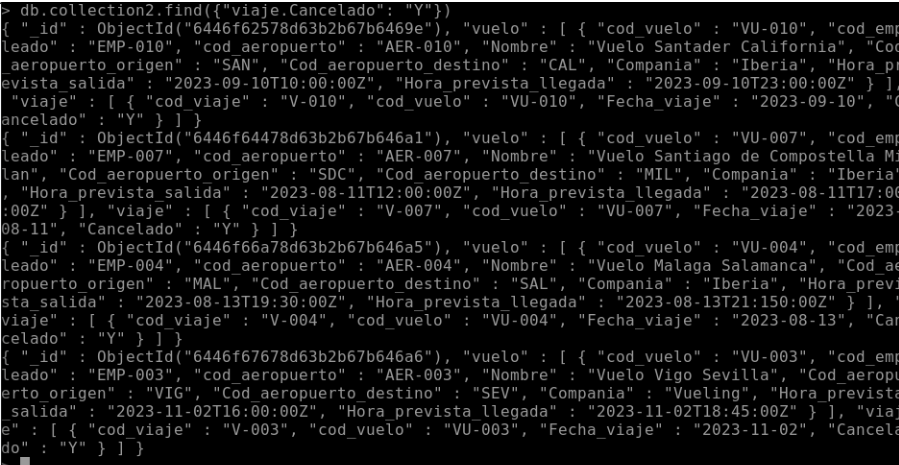
- Obtener todos los vuelos con compañía Iberia:
db.collection2.find({"vuelo.Compania": "Iberia"})
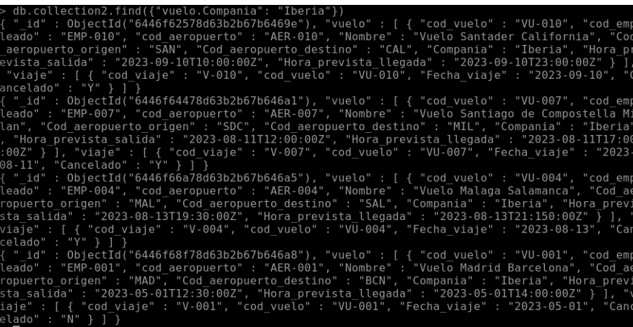
- Obtener el número de serie y la fecha de la última revisión de la aeronave.
db.coleccion1.find({}, {Num_serie: 1, Fecha_ultima_revision: 1})
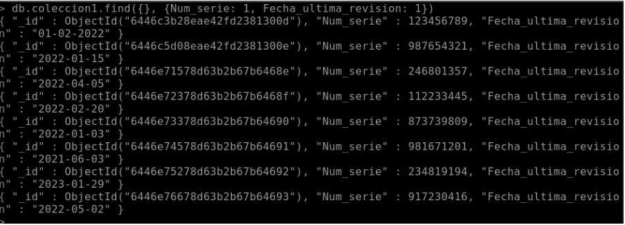
- Obtener la descripción y el nombre del técnico para el mantenimiento con código “MNT-010”.
db.coleccion1.find({"mantenimiento.cod_mantenimiento": "MNT-010"}, {"mantenimiento.Descripcion": 1, "mantenimiento.Nombre_tecnico": 1})
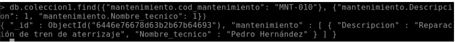
Con esto, ya hemos acabado el apartado de consultas simples.
6.2.- Al menos 3 consultas con arrays
- Obtener todas las características del avión con número de serie igual a 917230416:
db.coleccion1.find({"Num_serie": 917230416}, {"Caracteristicas": 1, "_id": 0})
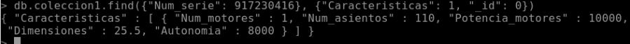
- Obtener la cantidad de motores de los aviones que tengan de modelo de compañia a Airbus:
db.coleccion1.find({"Modelo_compania": "Airbus"}, {"Caracteristicas.Num_motores": 1, "_id": 0})
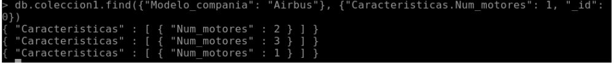
- Obtener la descripción del mantenimiento de los aviones que tengan más de 1000 horas de vuelo.
db.coleccion1.find({"Num_horas_vuelo": {$gt: 1000}}, {"mantenimiento.Descripcion": 1,"_id": 0})
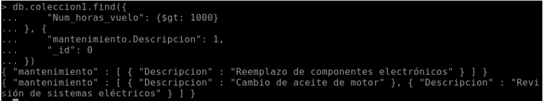
Con esto ya hemos acabado las consultas que involucran a arrays.
6.3.- Al menos 3 consultas con documentos embebidos
- Obtener las dimensiones del avión con número de serie 234819194:
db.coleccion1.find({"Num_serie": 234819194}, {"Caracteristicas.Dimensiones": 1, "_id": 0})
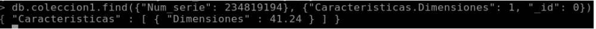
- Obtener todas las características de los aviones con menos de 400 horas de vuelo:
db.coleccion1.find({"Num_horas_vuelo": {$lt: 400}}, {"Caracteristicas.Num_motores": 1,"Caracteristicas.Num_asientos": 1, "Caracteristicas.Potencia_motores": 1, "Caracteristicas.Dimensiones": 1, "Caracteristicas.Autonomia": 1, "_id": 0})
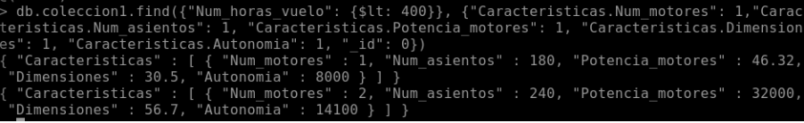
- Obtener el nombre del vuelo que sale desde Valencia a Mallorca el 11 de abril de 2023:
db.collection2.find({"vuelo.Cod_aeropuerto_origen": "VAL","vuelo.Cod_aeropuerto_destino": "MLL","viaje.Fecha_viaje": "2023-04-11"}, {"vuelo.Nombre": 1, "_id": 0})
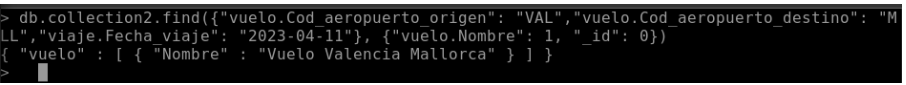
Con esto ya hemos acabado las consultas que involucran a los documentos embebidos.
6.4.- Al menos 1 consulta de agrupación
- Obtener, por grupos, los documentos de la colección vuelos por la compañía de cada vuelo y cuenta cuántos documentos hay en cada grupo:
db.collection2.aggregate([{ $group: { _id: "$vuelo.Compania", count: { $sum: 1 } } }])
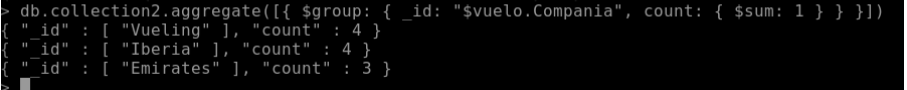
Con esto ya hemos acabado las consulta de agrupación y el proyecto de MongoDB.